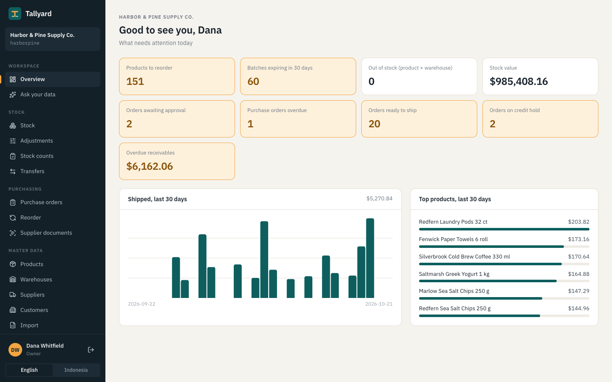
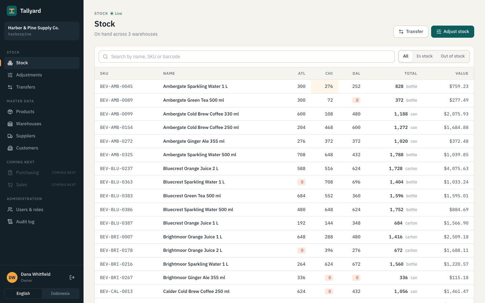
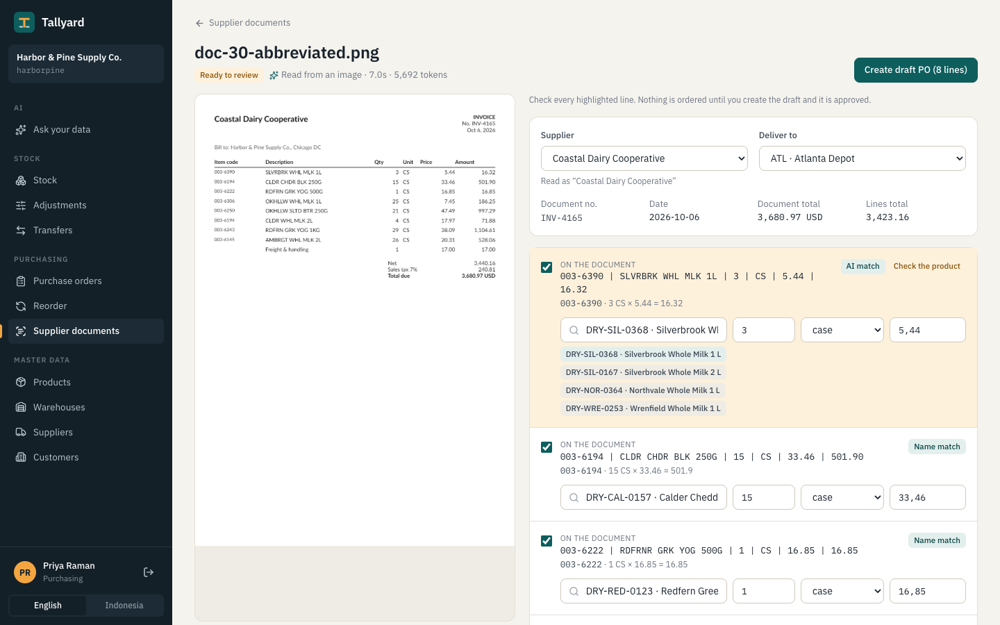
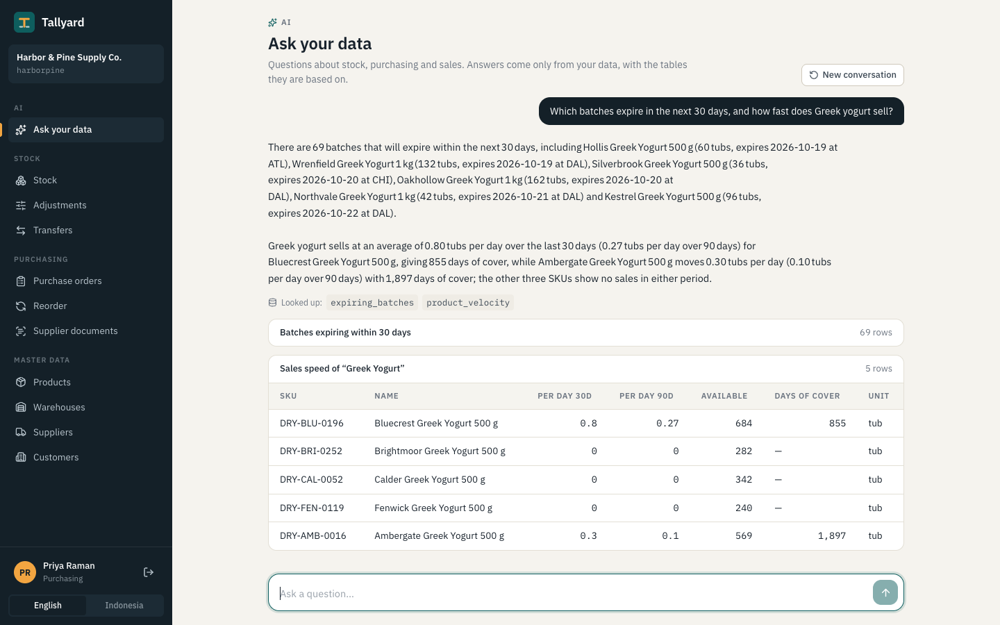
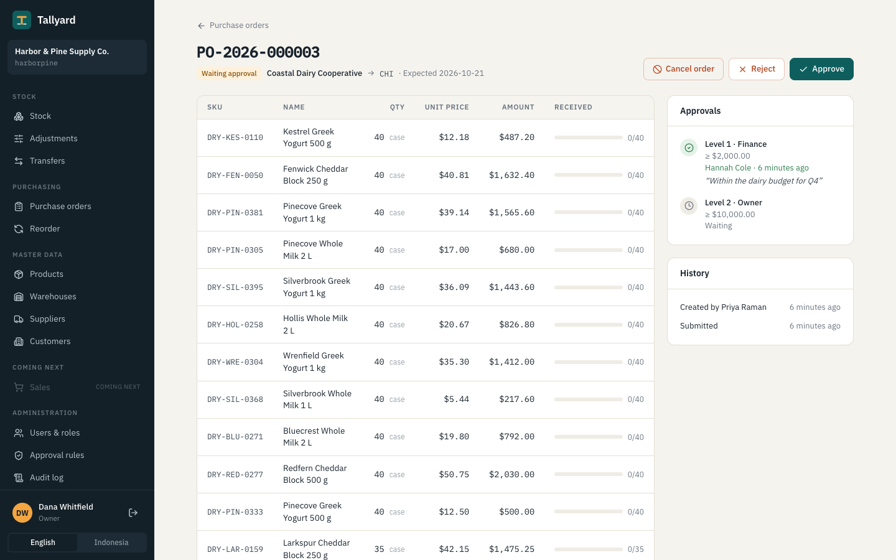
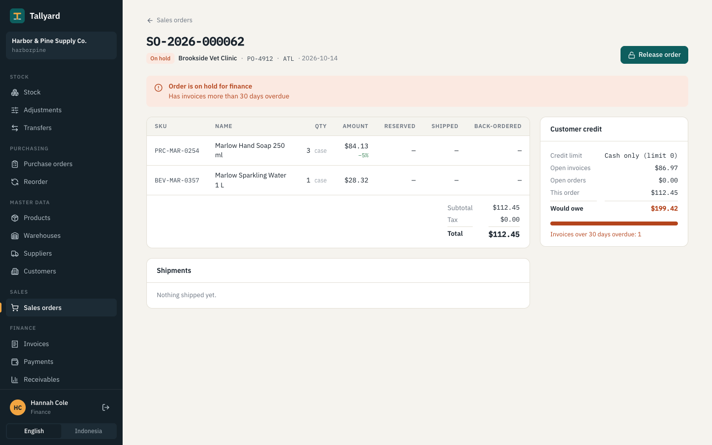
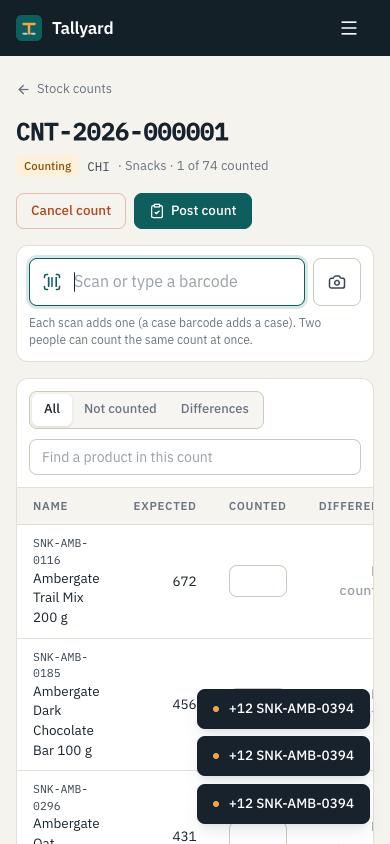

Overview
What needs attention, by role
Each tile links to the screen where it’s handled. Money is left out for roles that can’t see it: warehouse staff see units, never costs.
Operations software for wholesale distributors moving off spreadsheets: stock across warehouses, purchasing with approvals, and order-to-cash, with AI that reads supplier invoices into draft orders. Built to show how this kind of system stays correct when many people use it at once.
A distributor with a few warehouses and a few hundred products keeps stock in Excel, takes orders on WhatsApp and retypes supplier invoices. Nobody knows what is on hand, promised or on the way; stockouts surface when a customer complains. Full ERPs are expensive and slow to implement. Tallyard goes deep on the three flows where distributors lose money instead of shallow across everything.
Each tile links to the screen where it’s handled. Money is left out for roles that can’t see it: warehouse staff see units, never costs.

Every change to stock is an append-only movement posted by one service, StockLedger, which locks the balance rows it touches in a fixed order, checks free stock, and updates balances in the same transaction.

Text comes from the PDF, or from a vision model for photos. gpt-oss-120b fills a strict JSON schema; lines are matched by our barcode, then name similarity, then the model choosing among the closest products. Deterministic checks (quantity × price, totals, units) flag what a person must look at.
Nothing is ordered until someone creates the draft and it is approved.

| 30 fictional invoices · 145 lines | First run | With our brand list in the prompt |
|---|---|---|
| Supplier, number, date, total read correctly | 100% | 100% |
| Lines matched to the right product | 92% | 99% |
| … abbreviated names only (“SLVRBRK WHL MLK 1L”) | 63% | 97% |
| Wrong product with no flag | 0 of 116 | 0 of 134 |
The row that matters is the last: a confident wrong match would become a wrong order. The misses all showed up as “pick the product”.
The chat never writes SQL. It can call eight fixed queries, each running as the person asking: their tenant, their warehouses, and no price columns for roles that may not see them. Every number in the answer comes from a table shown underneath.

Above 2,000 an order needs finance; above 10,000 also the owner. Nobody approves their own order or two steps of the same one. Goods are received in part or in full, a case barcode counting a case.

A customer over their limit, or with invoices more than 30 days overdue, puts new orders on hold until finance releases them with a reason. Only reserved stock ships; each shipment is invoiced once; payments settle the oldest invoices first.


Products, customers, suppliers and opening stock import from Excel: every row validated and previewed, then applied all-or-nothing. Stock counts work on a phone with a scanner or the camera; two people can count at once, and posting adjusts by counted − expected so sales during the count aren’t undone.
63 tests run against Postgres in Docker (Testcontainers), set up exactly like production: the app connects as a role that row-level security applies to.
tenant_id lacks row-level security, or any row points at another tenant’s dataASP.NET Core and EF Core for a domain of many entities and strict rules (typed money, mature transactions and locking); Postgres for row-level security and constraints; Angular for a form-heavy internal app. One deployable: the SPA is served by the API from one origin. The reasoning, alternative by alternative, is in the repository’s plan.